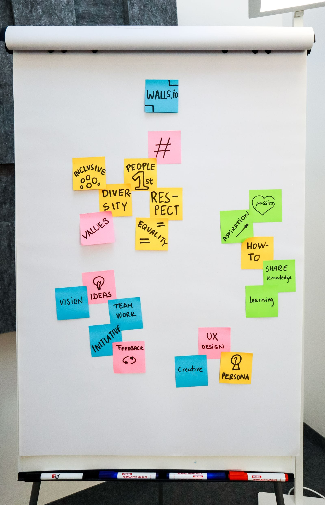

4 weeks · sample
Track 01
Idea Validation
Pressure-test the problem before you write a line of code. Talk to real customers, sharpen your value proposition and decide what to build first.
Best for · eligibility (sample)
Founders with a problem hypothesis and no product yet
Outcomes
- 20+ structured customer interviews
- Validated value proposition & target segment
- A one-page test plan for the next 30 days